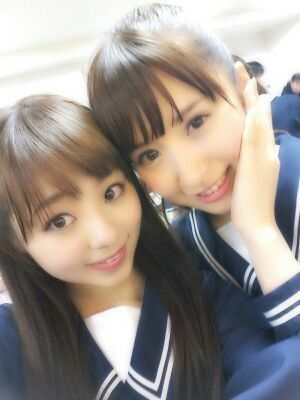

ほっほーーーい ))))
Rotty☆だお !

↑この写真は5thの新制服★
この制服も若干デザインが
違って3パターンあるんだお(・ω・)!
乃木どこ?見たら
分かりやすいんだけど、
2段目に座っているメンバーが
白のりぼんで
1段目の八福神は
紺色のネクタイで
真ん中のみなみ,生駒,えりかが
白色のネクタイなんやでぃ(´▽`)/
ほんで、まひろは
紺色のネクタイの制服 )))
1番おちついた感じの
デザインかな(*´▽`*)
ぴょん )))
ほんでねっ、
この前の乃木坂1歳live★
メンバーらの親も
見に来てくださってて、
まひろの両親も見にきてたんよー !
ほんでね、次の日 朝から親来て、
冷蔵庫に保管してた
チョコレート達を全部
もってかれたwww 笑
明治の板チョコ...
はぁーーーい ( = ε = )
ダイエットしまぁ〜す 笑
昼頃から
親と初渋谷 ! ! そして原宿 。
まひろのよく行くカフェ
連れてってや (´▽`)/
ってなって、とりあえず行って
まひろがよく歩く道を歩いたり
色々おしゃべりしながら
ちょっと原宿辺りとか
ぶらぶらしたよん*^^*
でも 飛行機で すぐ大阪帰ったから
夕方頃にはバイバイしたよっ(´ω`)/
また質問返し しようかなん♪
質問受付中ww (/*´3`*)/
のし。